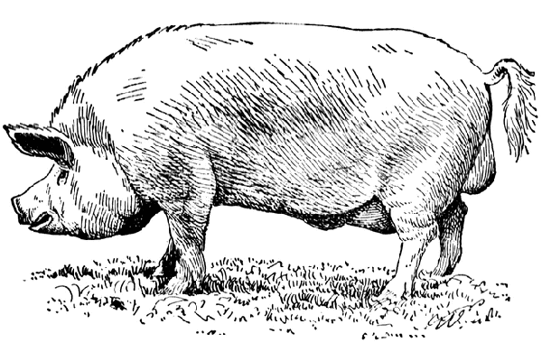
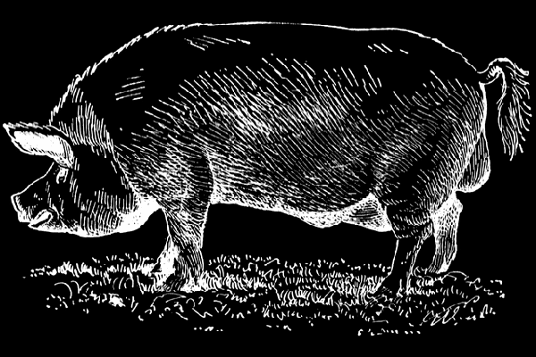
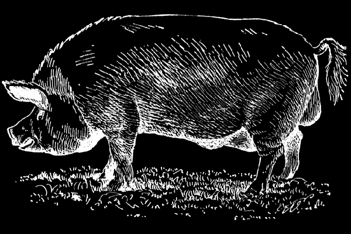
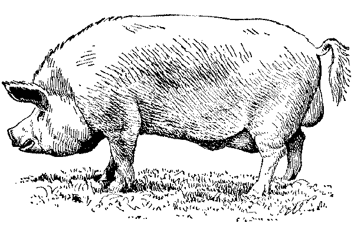

Fons blanc
Imatges amb background CSS blau.

PNG
Color negre i fons blanc

PNG
Color blanc i fons negre
PNG
Color negre i fons transparent
PNG
Color transparent i fons blanc

PNG
Color transparent i fons negre

JPG
Color Negre i fons blanc
GIF
Color negre i fons blanc

GIF
Color negre i fons transparent

GIF
Color blanc i fons transparent